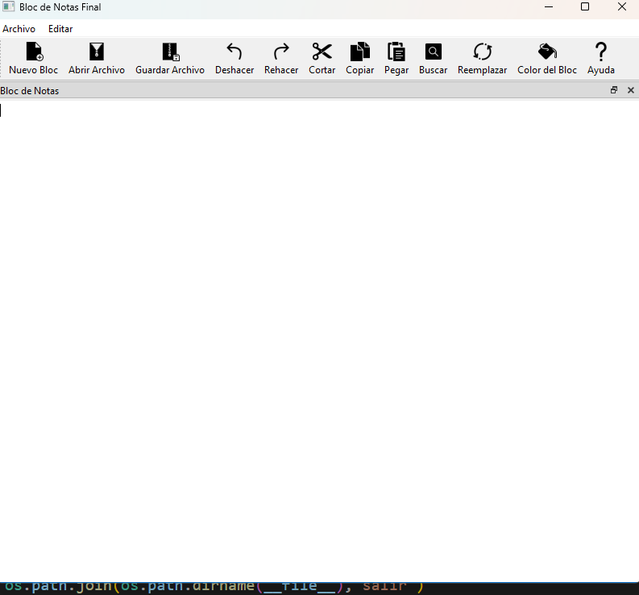

2DAM DI · Tarea
QT6 - 9 Mini office -Practica final - alfa
Instrucciones
MiniOffice
- Ventana Principal: La aplicación debe tener una ventana principal con un título “Mini Word”.
- Área de Texto: Debe haber un área de texto (QTextEdit) que ocupe la mayor parte de la ventana, donde los usuarios puedan escribir y editar sus notas.
- Barra de Menú:
- Archivo: Debe tener un menú "Archivo" que incluya las acciones de "Nuevo", "Abrir", "Guardar" y "Salir".
- Editar: Un menú "Editar" con acciones para "Deshacer", "Rehacer", "Copiar", "Cortar" y "Pegar".
- Las acciones deben tener atajos de teclado apropiados y deben estar conectadas a sus funcionalidades correspondientes.
- Barra de Herramientas: Debe haber una barra de herramientas con botones para las acciones más importantes.
- Nuevo: Para abrir un nuevo documento en blanco.
- Abrir: Para abrir un documento existente.
- Guardar: Para guardar el documento actual.
- Deshacer: Para deshacer la última acción realizada.
- Rehacer: Para rehacer la última acción deshecha.
- Cortar: Para cortar la selección actual y copiarla al portapapeles.
- Copiar: Para copiar la selección actual al portapapeles.
- Pegar: Para pegar el contenido del portapapeles en la posición actual del cursor.
- Buscar: Para buscar texto dentro del documento.
- Reemplazar: Para buscar y reemplazar texto dentro del documento.
- Estado de la Aplicación: La ventana debe tener una barra de estado que muestre mensajes informativos dependiendo de la acción realizada (por ejemplo, "Archivo guardado con éxito" después de guardar).
- Función de Nuevo: La acción "Nuevo" debe limpiar el área de texto para permitir al usuario comenzar a escribir una nueva nota.
- Personalización de la Aplicación: Agregar opciones para cambiar el color de fondo del área de texto o el tipo de letra.
- Contador de Palabras: Incluir una etiqueta en la barra de estado que muestre la cantidad de palabras en el área de texto.

Materiales de la tarea
No hay archivos adjuntos en esta tarea.